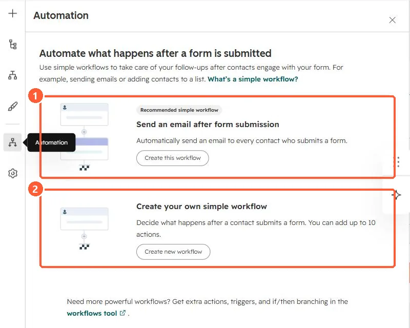

Short answer
The form editor's Automation panel offers Send an email after form submission (a recommended simple workflow) and Create your own simple workflow. In my demo portal the second says it can hold up to 10 actions. HubSpot's KB says Edit workflows permission is needed. For branching or more triggers, use the full workflows tool.
1. The Automation panel
My demo portal's form editor, Automation panel. I did not create a workflow.


2. Before you switch it on
- Marketing emails go only to contacts who can receive them. See marketing contacts.
- Check the form is not already in another workflow that sends the same email.